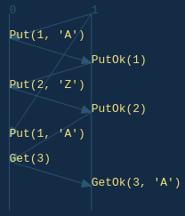

Chapter 1: Getting Started
IMPORTANT: Stateright is a relatively new framework and will be making breaking API changes leading up to a 1.0 release, at which point the API will be considered stable. If you plan to use Stateright for production scenarios, then please file a GitHub issue so that the author can coordinate with you to minimize any disruption.
Stateright's Value Proposition
Stateright is a Rust library that simplifies implementing distributed systems while more importantly providing a powerful mechanism for verification.
Verification of distributed systems is difficult because distributed algorithms must be resilient to nondeterminism caused by concurrency such as threads racing, but that's only part of the challenge. Distributed algorithms also need to account for the fact that computers typically interface via unreliable networks that will periodically do things like reorder or lose messages (if you run your system in "the cloud," then it's running on an unreliable network). Furthermore, often a distributed algorithm is expected to continue working even if a subset of computers crash at arbitrary points in their execution. Designing algorithms that continue working in the presence of this added nondeterminism is nontrivial and error prone, which necessitates special tools for verifying correctness.
One approach to verifying the correctness of distributed algorithms is to run them in an environment that randomly introduces nondeterminism more frequently than a normal environment would. This is the approach taken by Jepsen, and it has proven to be incredibly effective, finding bugs in distributed systems such as etcd, PostgreSQL, Redis, and Zookeeper among many others.
Stateright's approach is similar, but rather than testing a random subset of possible behaviors, it tests all possible observable behaviors within a particular specification. The catch is that Stateright needs to be embedded into the system's implementation, whereas solutions such as Jepsen do not, making them amenable to testing a wider range of software; but if you are writing a distributed system in Rust, then Stateright can provide additional verification over random testing.
An Example
Let's start with the simplest nontrivial distributed system: a single client that can interact with a single server by reading or writing a value. We'll see that even this minimal example is susceptible to surprising behavior.
Install the Rust programming
language if it is not already
installed, then initialize a new project using the cargo utility included
with Rust. If you are new to Rust, then you should also review some of the
language's learning resources.
mkdir getting-started
cd getting-started
cargo init
Define dependencies in Cargo.toml.
[package]
name = "getting-started"
version = "0.1.0"
authors = ["Jonathan Nadal <jon.nadal@gmail.com>"]
edition = "2018"
[dependencies]
env_logger = "0.7"
serde_json = "1.0"
stateright = "0.23"
Here is the complete implementation for main.rs. Copy-paste it into your own
file. The subsequent sections will explain further.
use stateright::actor::{*, register::*};
use std::borrow::Cow; // COW == clone-on-write
use std::net::{SocketAddrV4, Ipv4Addr};
type RequestId = u64;
#[derive(Clone)]
struct ActorContext;
impl Actor for ActorContext {
type Msg = RegisterMsg<RequestId, char, ()>;
type State = char;
fn on_start(&self, _id: Id, _o: &mut Out<Self>) -> Self::State {
'?' // default value for the register
}
fn on_msg(&self, _id: Id, state: &mut Cow<Self::State>,
src: Id, msg: Self::Msg, o: &mut Out<Self>) {
match msg {
RegisterMsg::Put(req_id, value) => {
*state.to_mut() = value;
o.send(src, RegisterMsg::PutOk(req_id));
}
RegisterMsg::Get(req_id) => {
o.send(src, RegisterMsg::GetOk(req_id, **state));
}
_ => {}
}
}
}
#[cfg(test)]
mod test {
use super::*;
use stateright::*;
use RegisterMsg::{Get, GetOk, Put, PutOk};
use SystemAction::Deliver;
#[test]
fn is_unfortunately_not_linearizable() {
let checker = RegisterTestSystem {
servers: vec![ActorContext],
client_count: 1,
.. Default::default()
}.into_model().checker().spawn_dfs().join();
//checker.assert_properties(); // TRY IT: Uncomment this line, and the test will fail.
checker.assert_discovery("linearizable", vec![
Deliver { src: Id::from(1), dst: Id::from(0), msg: Put(1, 'A') },
Deliver { src: Id::from(0), dst: Id::from(1), msg: PutOk(1) },
Deliver { src: Id::from(1), dst: Id::from(0), msg: Put(2, 'Z') },
Deliver { src: Id::from(0), dst: Id::from(1), msg: PutOk(2) },
Deliver { src: Id::from(1), dst: Id::from(0), msg: Put(1, 'A') },
Deliver { src: Id::from(1), dst: Id::from(0), msg: Get(3) },
Deliver { src: Id::from(0), dst: Id::from(1), msg: GetOk(3, 'A') },
]);
}
}
fn main() {
env_logger::init_from_env(env_logger::Env::default().default_filter_or("info"));
spawn(
serde_json::to_vec,
|bytes| serde_json::from_slice(bytes),
vec![
(SocketAddrV4::new(Ipv4Addr::LOCALHOST, 3000), ActorContext)
]).unwrap();
}
Actor Framework Intro
The code implements a simple server using the actor model in which an "actor" is an object that can respond to events (such as timeouts or message receipt) and in turn updates its internal state and generates outputs (such as sending a message or setting a timer).
If you are familiar with the actor model (e.g. via the Erlang language or the Akka library), then it is useful to note distinguishing characteristics of Stateright's approach:
- Stateright must have visibility of every input and output to facilitate
simulating all possible system behaviors. That means inputs and outputs must
be in the form of messages. For example, if your actor needs to interface
with a database, you might introduce
DbExec(...)output andDbResult(...)input messages; or if it needs to interface with the file system, you might introduceFileRead(...)output andFileResult(...)input messages. An adapter layer would then translate these into the corresponding effects rather than treating them as standard messages between actors in the system. This technique will be demonstrated in a later chapter. - Outputs do not take effect until after the handler returns. The outputs
are simply collected in the
o: &mut Out<Self>parameter whenever methods such asOut::send(...)are called, and Stateright's actor runtime sends them later. - The actor state is only accessible via a clone-on-write cell with the
state: &mut Cow<Self::State>parameter. Doing so enables Stateright to more efficiently validate a system when it is enumerating different branches of nondeterministic behavior.
Implementation Walkthrough
The server responds to Put and Get messages based only on its own local
state, providing its clients with a simple form of distributed storage,
sometimes known as a shared
register. Responses are linked
to requests via a request ID chosen by the client.
type RequestId = u64;
#[derive(Clone)]
struct ActorContext;
impl Actor for ActorContext {
type Msg = RegisterMsg<RequestId, char, ()>;
type State = char;
fn on_start(&self, _id: Id, _o: &mut Out<Self>) -> Self::State {
'?' // default value for the register
}
fn on_msg(&self, _id: Id, state: &mut Cow<Self::State>,
src: Id, msg: Self::Msg, o: &mut Out<Self>) {
match msg {
RegisterMsg::Put(req_id, value) => {
*state.to_mut() = value;
o.send(src, RegisterMsg::PutOk(req_id));
}
RegisterMsg::Get(req_id) => {
o.send(src, RegisterMsg::GetOk(req_id, **state));
}
_ => {}
}
}
}
A test follows. The test checks the system for a property called linearizability, which loosely speaking means that the visible behavior of the register emulated by the actor system is identical to that of a register within a single-threaded system. In the words of the individuals who coined the term:
Linearizability provides the illusion that each operation applied by concurrent processes takes effect instantaneously at some point between its invocation and its response, implying that the meaning of a concurrent object’s operations can be given by pre- and post-conditions.
- Maurice Herlihy and Jeannette Wing, in Linearizability: A Correctness Condition for Concurrent Objects
An important aspect of linearizability is the notion of a "sequential specification," which serves as a reference for correct behavior of the system. In other words, the system emulates the sequential specification. For instance, the sequential specification could indicate:
- the system behaves like a memory cell (i.e. register semantics),
- the system behaves like a queue,
- or the system behaves like a stack.
That means that when someone indicates that a system is linearizable, it is important to keep in mind the question "linearizable with respect to what?" In this chapter, the sequential specification is register semantics, provided by Stateright, but later chapters will involve other sequential specifications.
The test leverages
RegisterTestSystem,
which is built into Stateright and defines a system whereby a specified number
of clients (only 1 in this case) write distinct values and independently read
values without coordinating with one another. Under the hood
RegisterTestSystem also leverages Stateright's built-in
LinearizabilityTester.
#[test]
fn is_unfortunately_not_linearizable() {
let checker = RegisterTestSystem {
servers: vec![ActorContext],
client_count: 1,
.. Default::default()
}.into_model().checker().spawn_dfs().join();
//checker.assert_properties(); // TRY IT: Uncomment this line, and the test will fail.
checker.assert_discovery("linearizable", vec![
Deliver { src: Id::from(1), dst: Id::from(0), msg: Put(1, 'A') },
Deliver { src: Id::from(0), dst: Id::from(1), msg: PutOk(1) },
Deliver { src: Id::from(1), dst: Id::from(0), msg: Put(2, 'Z') },
Deliver { src: Id::from(0), dst: Id::from(1), msg: PutOk(2) },
Deliver { src: Id::from(1), dst: Id::from(0), msg: Put(1, 'A') },
Deliver { src: Id::from(1), dst: Id::from(0), msg: Get(3) },
Deliver { src: Id::from(0), dst: Id::from(1), msg: GetOk(3, 'A') },
]);
}
Stateright is able to find a bug that arises even if there is only a single
client. The test indicates a sequence of steps that trigger the bug (AKA a
Path), but
in practice you would normally just call checker.assert_properties(), and
Stateright would fail the test while indicating steps that reproduce the bug
(although the specific example that it finds can vary).
The actor with Id 0 is the server while the actor with Id 1 is the client.
For brevity, the example shows actor inputs (Deliver) but not outputs.

- The server receives a
Putfrom the client with value'A', which it acknowledges. The client receives thePutOkacknowledgement and in turn sends a secondPutwith a new value,'Z'(not shown yet since the test indicates messages deliveries only, not message sends).Deliver { src: Id::from(1), dst: Id::from(0), msg: Put(1, 'A') }, Deliver { src: Id::from(0), dst: Id::from(1), msg: PutOk(1) }, - The server receives the second
Put, which it acknowledges. The client receives thePutOkacknowledgement and in turn sends aGetrequest (not shown yet), expecting to read'Z'.Deliver { src: Id::from(1), dst: Id::from(0), msg: Put(2, 'Z') }, Deliver { src: Id::from(0), dst: Id::from(1), msg: PutOk(2) }, - The network redelivers the first write, inadvertently overwriting the second:
Deliver { src: Id::from(1), dst: Id::from(0), msg: Put(1, 'A') }, - The server receives the earlier
Getrequest and replies with'A'. The client receives the unexpected value, which violates linearizability because from the perspective of the client, the system is not behaving as a single-threaded register.Deliver { src: Id::from(1), dst: Id::from(0), msg: Get(3) }, Deliver { src: Id::from(0), dst: Id::from(1), msg: GetOk(3, 'A') },
The last bit of code defines the main method, which allows you to run the
actor on UDP port 3000, encoding messages with the JSON format.
fn main() {
env_logger::init_from_env(env_logger::Env::default().default_filter_or("info"));
spawn(
serde_json::to_vec,
|bytes| serde_json::from_slice(bytes),
vec![
(SocketAddrV4::new(Ipv4Addr::LOCALHOST, 3000), ActorContext)
]).unwrap();
}
Running
Confirm the system behaves as expected by running the test, which should pass
because the test asserts that the bug exists. Include the --release flag so
that Rust fully optimizes the code even during testing, as Stateright tests are
computationally intensive and can be time consuming.
cargo test --release
Now run the actor on a UDP socket.
cargo run --release
If using a POSIX-oriented operating system,
netcat can be used to interact with the
actor from a different terminal window. Actor responses are omitted from the
listing below for clarity, but you will see messages such as {"PutOk":0}
printed to STDOUT. Numbers in the messages are request IDs, the importance of
which will be more evident in the next chapter.
nc -u localhost 3000
{"Put":[0,"X"]}
{"Get":1}
{"Put":[2,"X"]}
{"Get":3}
Exercise
Uncomment the // TRY IT line, then run the test again. It should fail
indicating a sequence of steps that would cause the linearizability expectation
to be violated, and these steps may differ from the example that we followed.
This exercise demonstrates how Stateright can detect flaws that would likely go
undetected when simply reviewing code.
Summary
This chapter introduced one of the simplest possible distributed systems and showed how Stateright can find a subtle bug. The next chapter Taming the Network will address that bug.